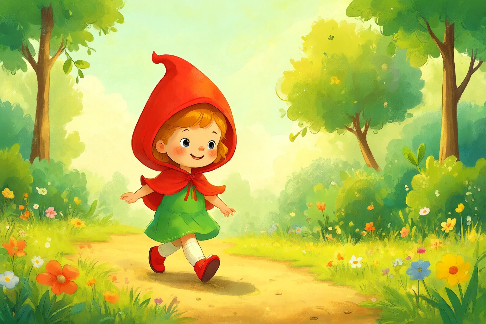
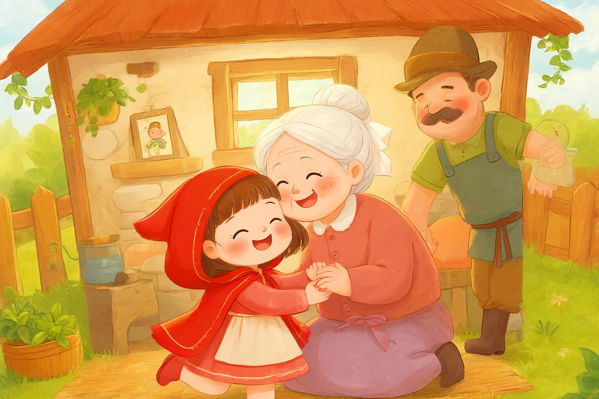

Érase una vez una niñita que lucía una hermosa capa de color rojo. Como la niña la usaba muy a menudo, todos la llamaban Caperucita Roja. Un día, la mamá de Caperucita Roja la llamó y le dijo: —Abuelita no se siente muy bien, he horneado unas galleticas y quiero que tú se las lleves. —Claro que sí —respondió Caperucita Roja, poniéndose su capa y llenando su canasta de galleticas recién horneadas. Antes de salir, su mamá le dijo: —Escúchame muy bien, quédate en el camino y nunca hables con extraños. —Yo sé mamá —respondió Caperucita Roja y salió inmediatamente hacia la casa de la abuelita. Para llegar a casa de la abuelita, Caperucita debía atravesar un camino a lo largo del espeso bosque. En el camino, se encontró con el lobo. —Hola niñita, ¿hacia dónde te diriges en este maravilloso día? —preguntó el lobo. Caperucita Roja recordó que su mamá le había advertido no hablar con extraños, pero el lobo lucía muy elegante, además era muy amigable y educado. —Voy a la casa de abuelita, señor lobo —respondió la niña—. Ella se encuentra enferma y voy a llevarle estas galleticas para animarla un poco. —¡Qué buena niña eres! —exclamó el lobo. —¿Qué tan lejos tienes que ir? —¡Oh! Debo llegar hasta el final del camino, ahí vive abuelita—dijo Caperucita con una sonrisa. —Te deseo un muy feliz día mi niña —respondió el lobo. El lobo se adentró en el bosque. Él tenía un enorme apetito y en realidad no era de confiar. Así que corrió hasta la casa de la abuela antes de que Caperucita pudiera alcanzarlo. Su plan era comerse a la abuela, a Caperucita Roja y a todas las galleticas recién horneadas. El lobo tocó la puerta de la abuela. Al verlo, la abuelita corrió despavorida dejando atrás su chal. El lobo tomó el chal de la viejecita y luego se puso sus lentes y su gorrito de noche. Rápidamente, se trepó en la cama de la abuelita, cubriéndose hasta la nariz con la manta. Pronto escuchó que tocaban la puerta: —Abuelita, soy yo, Caperucita Roja. Con vos disimulada, tratando de sonar como la abuelita, el lobo dijo: —Pasa mi niña, estoy en camita. Caperucita Roja pensó que su abuelita se encontraba muy enferma porque se veía muy pálida y sonaba terrible. —¡Abuelita, abuelita, qué ojos más grandes tienes! —Son para verte mejor —respondió el lobo. —¡Abuelita, abuelita, qué orejas más grandes tienes! —Son para oírte mejor —susurró el lobo. —¡Abuelita, abuelita, que dientes más grandes tienes! —¡Son para comerte mejor! Con estas palabras, el malvado lobo tiró su manta y saltó de la cama. Asustada, Caperucita salió corriendo hacia la puerta. Justo en ese momento, un leñador se acercó a la puerta, la cual se encontraba entreabierta. La abuelita estaba escondida detrás de él. Al ver al leñador, el lobo saltó por la ventana y huyó espantado para nunca ser visto. La abuelita y Caperucita Roja agradecieron al leñador por salvarlas del malvado lobo y todos comieron galleticas con leche. Ese día Caperucita Roja aprendió una importante lección: “Nunca debes hablar con extraños”.

Cuento clásico de Charles Perrault Versión escrita por Paola Artmann
Volver al inicio